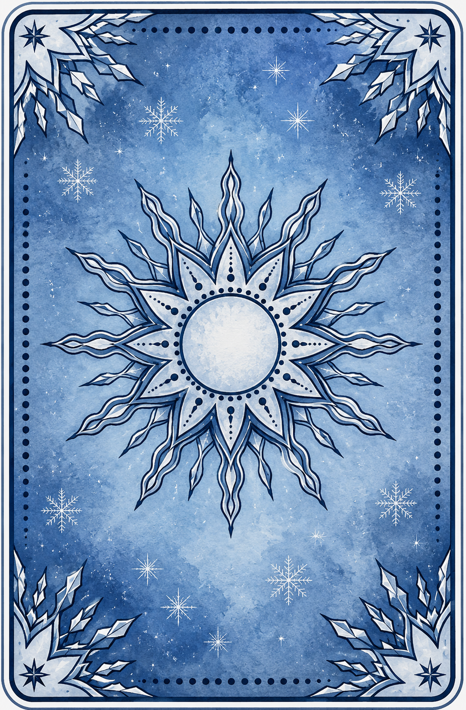

A minha riqueza está além do que minhas mãos e do que minha mente são capazes de produzir, tudo o que eu fizer hoje vai ficar pra trás um dia, eu não posso corrigir os erros do passado, nem os meus e muito menos os erros das outras pessoas, não há nada que compensar. Substituir a falta pelo cansaço não vai curar minha dor.
Eu não preciso de todos os recurso do mundo, o mais importante eu já tenho, está dentro de mim, eu sou minha própria semente, sou minha própria terra, eu mesma me rego, a luz sol não me será negada. Eu preciso apenas me dar tempo para florescer, eu sei que não vou parar de me cultivar.
Eu sou capaz de unir o melhor dos dois mundos, não posso impedir que passado e futuro estejam constantemente diante de mim, mas hoje é o amanhã do meu ontem, e assim como eu aprendi muito sobre mim de ontem pra hoje, eu acredito sim que meu futuro será maravilhoso, o tempo não será meu inimigo.
Quando : Segunda Lua Cheia do Inverno do Ano Um.
Céu : Sol em Leão | Lua em Aquário.